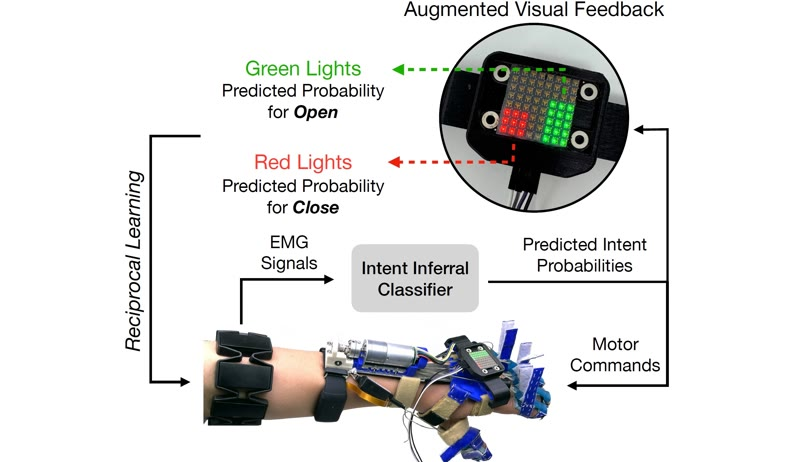
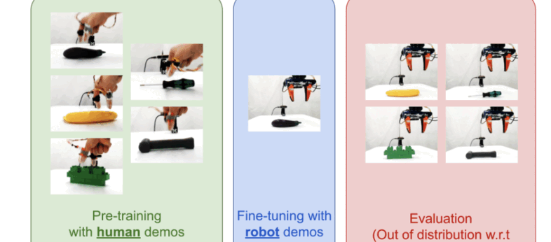

DITTO: Dexterous Interface for Transparent TeleOperation
*joint first authorship
arXiv preprint, 2026
Robotics · Columbia University · ROAM Lab
Hi there! I'm Joaquin, a Robotics Engineer from Quito, Ecuador.
I'm currently a PhD candidate in Mechanical Engineering at Columbia University. I work at the ROAM Lab, advised by Matei Ciocarlie.
I am passionate about the full stack of robotics: mechanical design, electronics, controls, and robot learning. My research interests are in autonomous robotic manipulation and medical assistive robotics.

Featured work in dexterous manipulation, assistive robotics, and agricultural robotics.
Co-designed dexterous hand and kinematically equivalent motorized exoskeleton for both handheld data collection and bilateral teleoperation with joint-level force feedback.
Visit project site →
Robot hand with 6-axis F/T sensorized fingertips and novel kinematics validated via RL policies.
View project →
Wearable robot to assist grasping for individuals with Spinal Cord Injuries.
View project →
Robotic crop pollination for Vertical Farming.
View project →Dexterous manipulation, tactile sensing, and assistive robotics.
*joint first authorship
arXiv preprint, 2026
*joint first authorship
IEEE International Conference on Robotics and Automation (ICRA), 2026

*equal contribution
IEEE International Conference on Rehabilitation Robotics (ICORR), 2025

*joint first authorship
arXiv preprint, 2025

*equal contribution
IEEE Transactions on Medical Robotics and Bionics (T-MRB), 2024

*equal contribution
IROS 2023 Workshop on Assistive Robots for Citizens
Selected research and projects across dexterous manipulation, assistive robotics, and mechatronics.

Co-designed dexterous hand and kinematically equivalent motorized exoskeleton for both handheld data collection and bilateral teleoperation with joint-level force feedback.
Robot hand with 6-axis F/T sensorized fingertips and novel kinematics validated via RL policies.
Robotic crop pollination for Vertical Farming.
Wearable robot to assist grasping for individuals with Spinal Cord Injuries.

Developing a robot hand to explore proprioception in dexterous manipulation.

A quadruped robot known for being cute and fast!

An exploration of mechatronics, machine design, controls, and machining.

A collection of projects exploring generative design, topology optimization, additive manufacturing, and more.

Projects in applied robotics, leveraging ROS 2 to implement (from scratch) cartesian control, inverse kinematics, path planning (using RRT algorithm), and more.
Robots used: UR5e, Franka Emika.